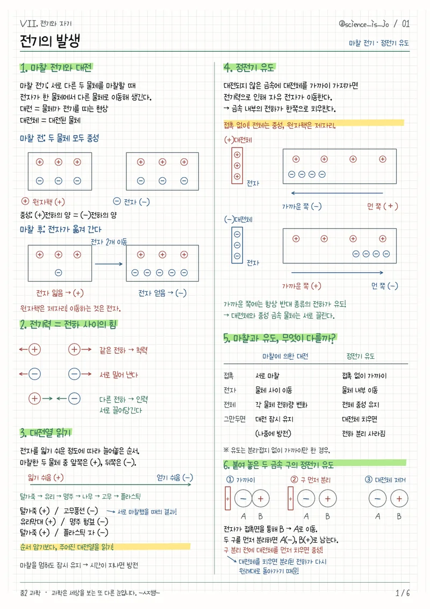

AI 활용 수업 자료실습 페이지로
AI 활용 수업 자료실습 페이지로
PDF 제작 자료
손글씨 정리본·단권화·학습지·개념 카드 제작 지침입니다.
실제 제작 코드와 작업 과정을 정리한 연수용 자료입니다.
SKILL.md는 AI가 참고하는 작업 지침서입니다.
파일 생성이나 코드 실행을 지원하는 AI 환경에서 수업 자료와 함께 사용합니다. 프로그램이나 글꼴 설치 파일은 아닙니다.
실제 제작 방식
| 손글씨 정리본 | 한글 TTF 글꼴 + 모눈·강조·선·도형 Python ReportLab으로 PDF 제작 |
|---|---|
| 개념 카드 | 개념별로 다시 배치 → 카드 PDF → PNG → ZIP |
| 과학 그림 | ReportLab 벡터 도형 또는 SVG 그림의 연결·부호·방향은 별도 확인 |
| 검수 | 쪽수·크기·텍스트 확인 + 모든 쪽을 이미지로 확인 수정 후 다시 출력 |
사용 순서
- ZIP을 풀고 SKILL.md와 사용법.md를 확인합니다.
- 본인의 학습지·수업 메모와 SKILL.md를 AI에게 전달합니다. 필요한 상세 지침과 검수표도 함께 첨부합니다.
- 대상, 형식, 분량, 강조할 내용을 알려 주고 대표 한두 쪽부터 확인합니다.
- 수정 후 전체를 제작하고, PDF의 모든 쪽과 편집 가능한 원본을 받습니다.
학생 개인정보는 지우고 첨부합니다. 글꼴 파일은 묶음에 포함하지 않았습니다. 사용할 글꼴의 사용 조건을 확인해 주세요.
제작 자료 예시
개별 파일
원본 코드의 개인 경로·단원별 고정값·배포 파일은 포함하지 않았습니다. 필요한 제작 방식과 검수 기준을 다른 과목에서도 사용할 수 있도록 정리했습니다.